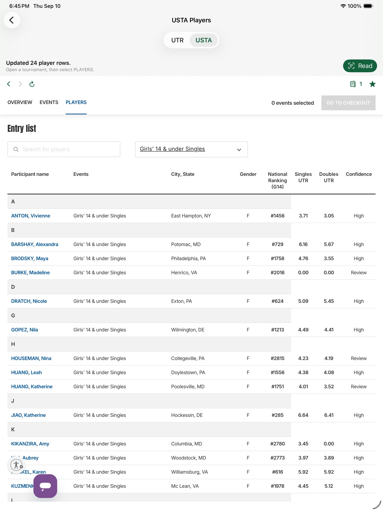
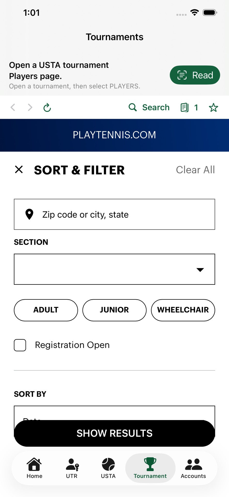

For tennis parents and coaches
Read the roster.
Look up the ranks.
MainDraw opens a USTA tournament Players list, then looks up National Ranking and UTR in sortable columns. A saved Look Up also puts UTR on the Draw.
Free to download · iPhone & iPad · iOS 17+
Unofficial tool. Not affiliated with, endorsed by, or sponsored by USTA or Universal Tennis.


The flow
Four taps from search to rankings
-
1
Find the event
Tournament opens USTA Find Tournaments with Sort & Filter ready. Search by location, dates, and junior or adult. Save the setup from Searches when you will run it again.
-
2
Open Players
Open the tournament, then the Players tab. Overview and Draws are not enough—Read needs the entry list on screen.
-
3
Read the roster
One tap extracts the names. Singles stay one player per row; doubles teams stay paired.
-
4
Look Up
National Ranking, UTR, and match confidence land in columns you can sort. Sign in to Universal Tennis once, on this device. Choose one event first—All events is not a list you can look up.
Also in the app
Filters, saved lists, and the draw
-
Save a filter
Set Sort & Filter, then tap Searches beside Results. Name it with Save Current Filters. Next time, open that name and the same location, dates, and divisions come back.
-
Remember the list
Each event is saved with its tournament for 7 days. Opening Players shows the original USTA table until you select an event you already looked up in that tournament.
-
UTR on the draw
During those 7 days, the Draw adds Singles UTR or Doubles UTR beside each saved player. You do not Look Up the Draw itself.
-
Two ages, one list
If a player entered two ages, the national ranking matches the list on screen. Look up Girls 14 and Girls 16 separately.
On the tab bar
Five places you actually live
-
Home
How to Use, Try Demo, plans, privacy, and support. The rest of the app stays one tap away.
-
UTR
Sign in to Universal Tennis with your own account. The session stays on the device in WebKit—MainDraw does not run a separate login.
-
USTA
The full USTA site when you already have a Players page, a bookmark, or need to browse beyond search.
-
Tournament
Find events, save a Sort & Filter setup, then Read and Look Up from the Players list. A saved search remembers the filters, not one tournament page.
-
Accounts
Switch family players like Switch Accounts in the USTA Tennis app, then open that child’s Upcoming and Completed schedule.
No accounts required
Try Demo on the Home tab
Demo Mode uses an offline sample roster. Tap Read, then Look Up, and see the annotated columns without USTA or Universal Tennis sign-in.
- Download
- Free
- Look Up trial
- 30 days for new installs
- Then
- $0.99 / month or $9.99 / year
- Always free
- Browse, bookmarks, Demo
Questions
What parents usually ask
What is MainDraw?
An unofficial iOS app that reads a USTA tournament Players list and looks up National Ranking and UTR for those players. Built for parents and coaches who otherwise bounce between USTA and Universal Tennis.
Is this an official USTA or UTR app?
No. MainDraw is not affiliated with, endorsed by, or sponsored by USTA or Universal Tennis. You use your own accounts and are responsible for following their terms.
Do I have to subscribe to browse tournaments?
No. Browsing USTA and UTR pages, bookmarks, and Demo Mode stay available without a subscription. Look Up is free for 30 days after a new install, then needs a monthly or yearly plan through Apple.
Can I save a tournament filter?
Yes. On the Tournament tab, set location, dates, and the other filters, then tap Searches beside Results and Save Current Filters. Give it a name. Opening that name later fills Sort & Filter again. Use Manage Saved Searches to rename, reorder, or delete one.
Does the Draw show UTR?
After Look Up on a Players list, that event stays with the tournament for 7 days. The Draw then shows Singles UTR or Doubles UTR beside each saved player. You do not run Look Up on the Draw. If a player entered two ages, the ranking matches the list you are viewing.
How do family / child accounts work?
Sign in as the parent on the Accounts tab, pick a child, and MainDraw opens that player’s Upcoming and Completed schedule. From a tournament, open Players, then Read and Look Up—the same flow as the USTA tab.
Where does my login data go?
USTA and Universal Tennis session cookies stay on your device. MainDraw does not operate its own user accounts or upload those sessions to a MainDraw server. Look Up calls those services directly from the phone. See the privacy policy.
How do I get help?
Email taobo2000@gmail.com. Manage or cancel a subscription in iOS Settings → Apple ID → Subscriptions.